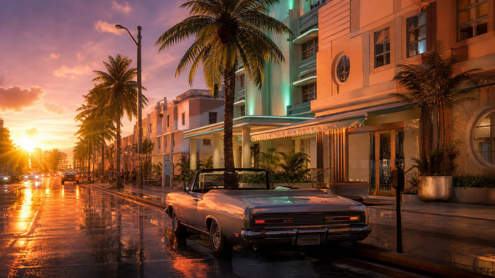
J-1 · Leonida se prépare
GTA VIThe Ultimate Guide
Le hub francophone définitif : faits officiels Rockstar, stratégies de presse post-embargo, arbitrages contradictoires et médias originaux — chaque donnée porte son statut.
OFFICIEL
PRESSE · 18/11
PRESSE · 18/11
SPOILER PROTÉGÉ
Sortie officielle · 19 novembre 2026 · minuit heure locale
--jours
--heures
--minutes
--secondes
Visuel d'ambiance généré par IA, inspiré de la direction artistique néon / sunset : ce n'est ni une capture ni une jaquette Rockstar. Voir les crédits image.
Recherche horodatée
Base de faits S3
Ces compteurs sont établis à partir du corpus de recherche interne du projet, tenu à jour à chaque étape et non publié. Ils restent conformes au fichier validé.
OFFICIEL
PRESSE · 18/11
PRESSE · 18/11
EN ATTENTE · 19/11
Priorité aux sources primaires
Ce qui est officiel
Sortie et plateformes
19 novembre 2026 sur PS5, PS5 Pro et Xbox Series X|S. Aucune version PC annoncée.
6 régions de Leonida
Vice City, Leonida Keys, Grassrivers, Port Gellhorn, Ambrosia et Mount Kalaga National Park.
Deux protagonistes jouables
Jason Duval et Lucia Caminos ; le synopsis officiel suit un coup qui tourne mal à travers Leonida.
Image et musique
30 FPS sur toutes les consoles ; 6 stations radio prévisualisées et un album de 34 titres.
Préchargement
Ouvert le 10 novembre 2026 ; jusqu'à 212 Go requis. Code-in-box, pas de disque dans l'édition physique numérique.
Éditions
Standard 79,99 $ et Ultime 99,99 $ ; pack Vintage + GTA+ selon l'offre Ultimate relevée sur le Store FR.
Check-list de lancement
Guide de démarrage J-1
1 · Vérifier le préchargement
Confirmer l'espace libre et le téléchargement ouvert le 10 novembre 2026. Le Store FR et la page VI restent la référence pour les éditions.
2 · Mettre à jour la console
La presse relaie le firmware PS5 26.07-14.23.00 (1,267 Go) et le patch jeu 01.002.001 (602,5 Mo PS5, 1,59 Go Xbox rapporté). Aucune note Rockstar publiée.
3 · Ce qu'on ne publie pas encore
Pas de liste officielle de trophées, cheats, checklist 100 %, safe codes universels, notes de day-one patch, GTA VI Online ni version PC. Ces sections restent explicites, jamais inventées.
Accessibilité. Navigation clavier complète : Tab parcourt tous les contrôles, / focalise la recherche, Alt+M focalise le lecteur audio, Échap ferme les panneaux. Les spoilers sont des boutons ARIA et le lecteur ne démarre jamais automatiquement.
Post-embargo · sources croisées
Stratégies, techniques et solutions
Les routes ci-dessous proviennent de GameSpot, PlayStationInfo, YouTube, GitHub, Reddit et des réseaux sociaux. Elles sont badgées et protégées par un SpoilerToggle.
Atteindre 6 étoiles
- Rester sur les lieux après un policier abattu pour être identifié.
- Prolonger la poursuite, éviter le centre de Vice City et viser Leonard / Lummox ou Kelly County.
- Véhicule solide, armes automatiques, puis changement de tenue, apparence et véhicule : les Hot Areas restent surveillées.
GameSpot · relevé du 18/11, non officiel, à recouper en jeu.
Argent rapide
- Plongées au trésor de Kenton et planques de gang / revendeurs.
- Contrats de véhicules Moses et Randy, Pay'N'Spray.
- Fleeca et commerces haut de gamme après le milieu de l'histoire, avec Dye Pack Jammers.
La section Starlet Motel est spoilée : elle reste ici résumée, sans suite détaillée.
Braquages propres
- Contrôler la foule, désactiver l'alarme sur le panneau blanc, neutraliser ou détruire les CCTV.
- Snap Gun pour les accès arrière, Focus pour repérer codes et caméras.
- Billets marqués : Dye Pack Jammer au chapitre 3 ; coffres de banque via camion blindé / Yasmani.
GameSpot · plusieurs playthroughs, conditions non publiées par Rockstar.
Codes de coffre. GameSpot rapporte des codes aléatoires : aucune liste universelle n'est publiée. Des combinaisons mission-specific circulent dans une autre source de presse ; elles restent non recoupées, non officielles et masquées derrière l'arbitrage plus bas.
YouTube
Compilation « 106 tips » du 12/11, 14:02, annonçant 212 Go : agrégation de sources multiples, utile comme piste, jamais comme vérité officielle.
GitHub
Compagnons Leonida Dispatch, GTA6 Atlas et serveur MCP : countdown, cartes, checklist et datasets explicitement placeholders jusqu'au 19/11.
Reddit & X
Spéculations PC anciennes, lives, comptes countdown et chiffres d'hype : signaux d'engouement, pas de config PC officielle ni de mécanique confirmée.
Embargo levé le 18/11 à 11:00 UTC
Reviews : 99 chez Metacritic, sans fusionner les agrégats
PRESSE · 18/11
OpenCritic · relevé direct
63 critiques dans le JSON-LD et 100e percentile. Capture horodatée, distincte de Metacritic.
Le fil du lancement — 18 novembre 2026
Deux correctifs, un firmware PS5 obligatoire, les horaires par fuseau, les mesures 30 fps de Digital Foundry et les fausses informations à écarter : l'état vérifié du jour d'ouverture.
Catalogues visuels
Chaque objet, avec son vrai visuel
Pas de vignette générique, pas d'illustration inventée : les 51 armes, les 152 véhicules et les 27 espèces de Leonida ont chacun leur fiche et leur visuel, tirés des bases communautaires du jeu. Et les trois vraies cartes de Leonida sont enfin publiées, avec leur statut.
PRESSE · 18/11
Armes et véhicules
Huit familles d'armes avec leur modèle d'inspiration, douze classes de véhicules du scooter au yacht. Aucune performance inventée.
La nuit du 18 au 19 novembre
La Nouvelle-Zélande joue déjà, vous non
Le jeu s'est ouvert là-bas à 11:00 UTC. Entre cet instant et votre minuit, il s'écoule environ douze heures — c'est la fenêtre où les spoilers circulent. Nous avons préparé une page pour la traverser, puis pour bien démarrer : réglages, premier trajet, premières missions, et les mesures réelles sur votre console.
PRESSE · 18/11
Technique, versions commerciales
- Xbox Series X : ~1440p, 30 fps, creux à 20–21 fps en fusillade
- Xbox Series S : ~720p, souvent sous 30 fps
- PS5 : 1440p, creux à 23 fps sur explosions lourdes
- Latence ~180 ms ; aucun mode 60 fps
Intégrité éditoriale
Arbitrages et contradictions
Codes de coffre
GameSpot : aléatoires sur plusieurs playthroughs. PlayStationInfo : trois combinaisons spécifiques à une chaîne de missions Yasmani, reprises de PowerPyx. Décision : aucune liste universelle, statut mission-specific, recoupement in-game obligatoire.
Scores
OpenCritic 98 / 63 critiques vs snapshots 98 / 54 et Metacritic 99 / 146, 99 / 109, 99 / 100. Décision : chaque chiffre garde son agrégateur et son horodatage.
Embargo
Levée confirmée le 18/11 à 11:00 UTC — soit 12:00 à Paris — par plusieurs synthèses de presse, au moment même où le jeu s'ouvrait en Nouvelle-Zélande. Rockstar n'a publié aucun communiqué sur l'heure : c'est une observation concordante, pas une annonce.
Patches & online
Firmware 14.23 et patch 01.002.001 sont des relevés de presse, sans notes Rockstar. Aucun day-one patch confirmé ; GTA VI Online et PC restent non annoncés.
| Relevé | Statut | Règle d'affichage |
|---|---|---|
| 93 missions, 55 trophées, 5 chapitres | PRESSE · 18/11 | Relevés post-embargo ; jamais « officiel », spoiler protégé, recoupement PSN / Xbox / in-game. |
| 50–80 h pour l'histoire principale | PRESSE · 18/11 | Durée de testeur / déclaration presse ; pas une durée garantie pour tous les profils. |
| Liste officielle trophées, cheats, checklist, patch notes | EN ATTENTE · 19/11 | État explicite : aucune donnée inventée avant publication primaire. |
Actualité, versions et calendrier · Chiffres et méthode de vérification · Mentions légales
Lot validé S2 · IMG001–IMG010
Galerie cinématographique S2
Les 10 JPG approuvés en S2 sont intégrés ci-dessous avec alt descriptif, loading="lazy" et dimensions explicites. Illustrations IA originales — aucune capture officielle.
ILLUSTRATION IA
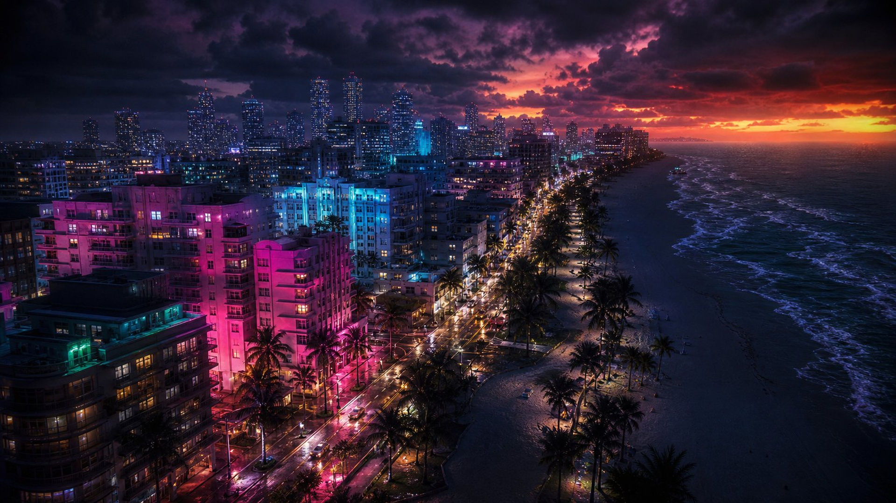
Vice City · Nuit néon
Skyline humide, reflets magenta et bleu électrique, ambiance crépusculaire.
ILLUSTRATION IA
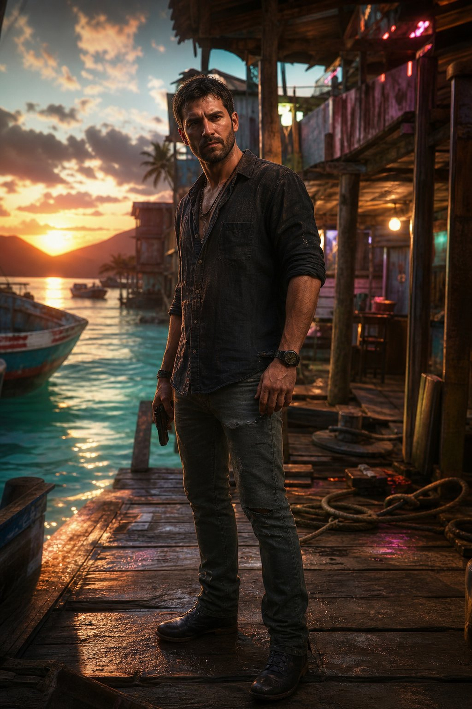
Jason Duval
Portrait vertical stylisé, lumière sunset et néon violet.
ILLUSTRATION IA
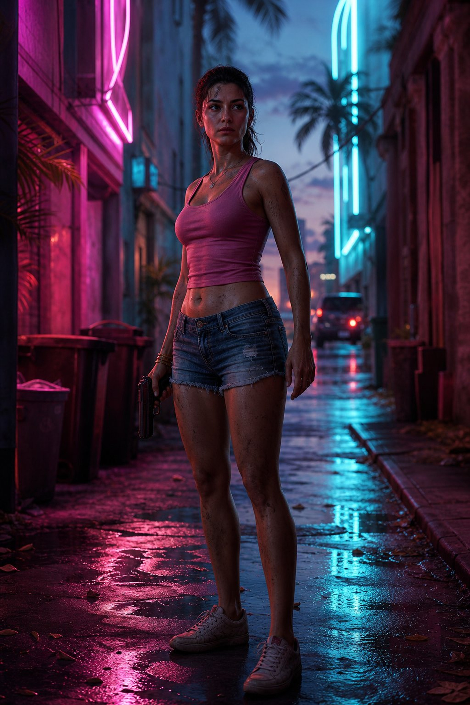
Lucia Caminos
Portrait vertical, contraste orange / cyan, attitude déterminée.
ILLUSTRATION IA
Leonida · Vue aérienne
Côtes, zones humides et métropole sous lumière dorée.
ILLUSTRATION IA
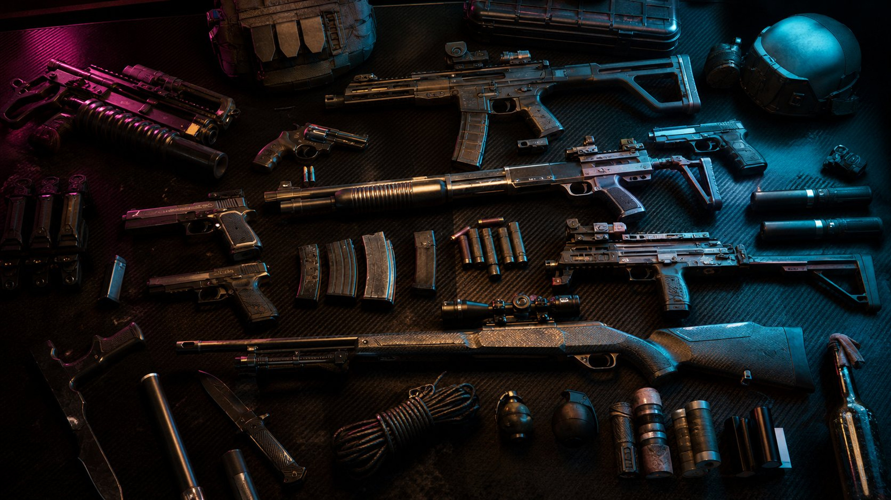
Arsenal · Nature morte
Équipement générique sous néon, sans marque ni arme officielle.
ILLUSTRATION IA
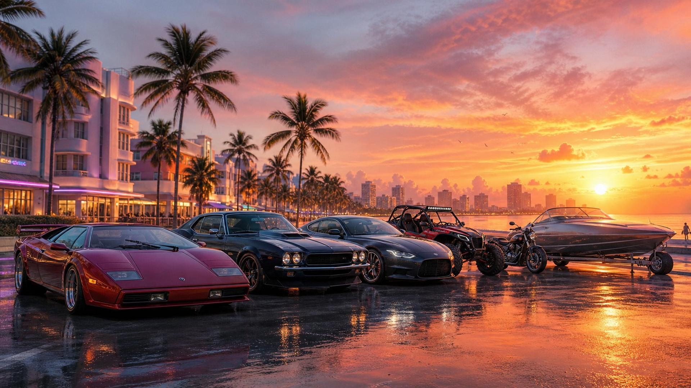
Garage · Line-up
Voitures fictives non badgées devant une skyline pastel.
ILLUSTRATION IA
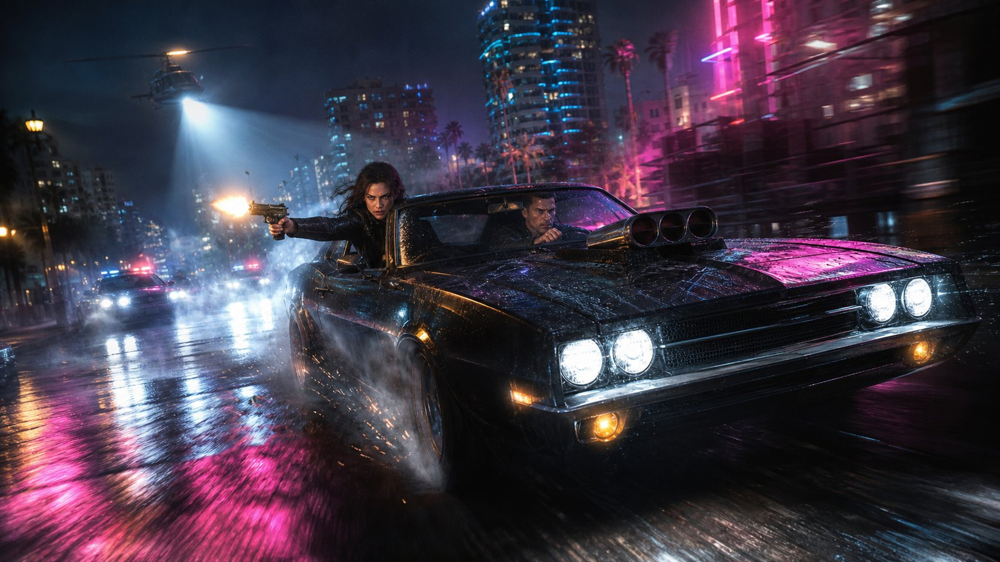
Braquage · Action
Gyrophares, pluie et reflets néon dans une composition dynamique.
ILLUSTRATION IA
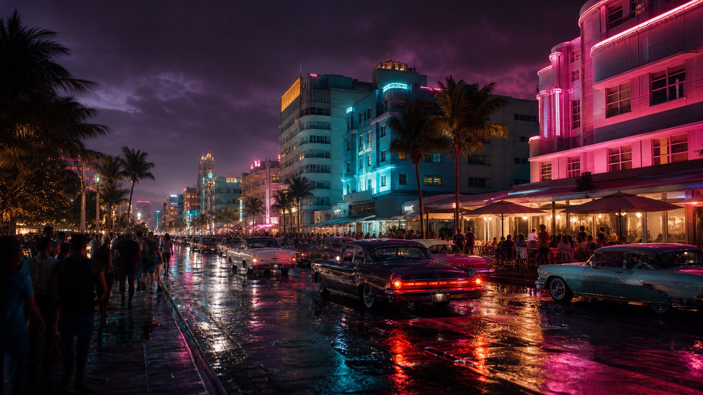
Quartiers Art déco
Façades pastel, palmiers et néon rose après la pluie.
ILLUSTRATION IA
Leonida Keys
Ponts, lagons turquoise et lumière dorée sur l'archipel.
ILLUSTRATION IA
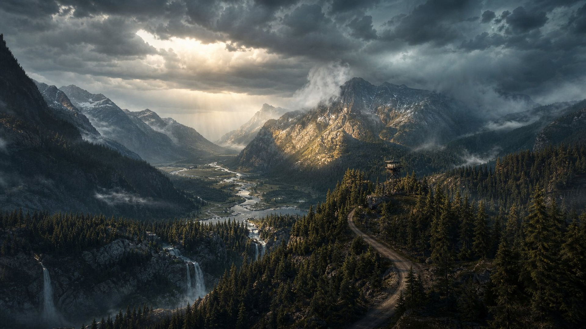
Mount Kalaga
Crêtes brumeuses, forêts et ciel violet / orange.
Nouveau lot S3 · IMG011–IMG020
Galerie cinématographique S3
Dix nouvelles illustrations JPG haute qualité générées pour la homepage définitive, optimisées en 1920×1080 / 1280×1920, JPEG q95 progressif. Elles s'ajoutent au lot S2 sans le remplacer.
ILLUSTRATION IA
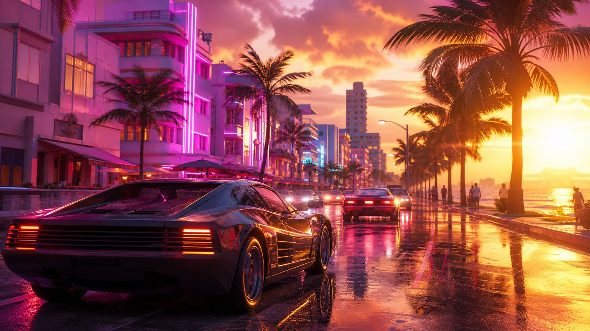
Ocean Drive · Sunset
Hero principal S3, lumière orange et reflets magenta.
ILLUSTRATION IA
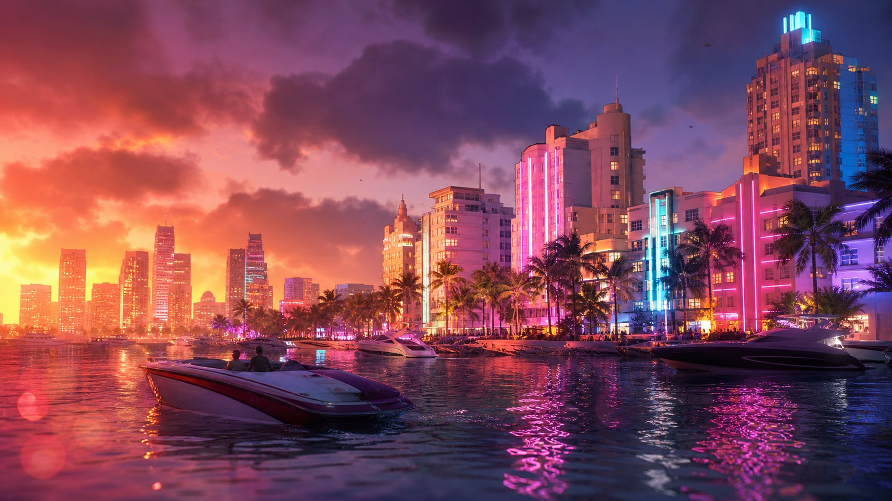
Skyline · Dusk
Horizon orange, ciel violet, tours pastel et waterfront.
ILLUSTRATION IA
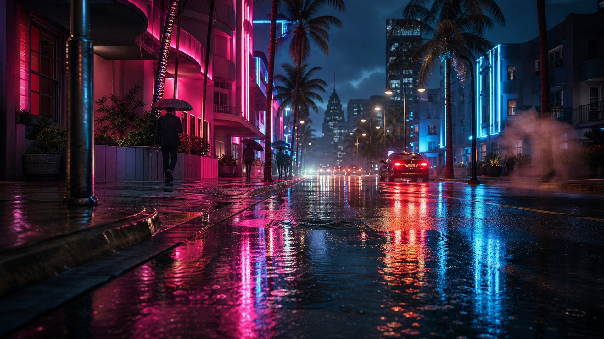
Neon Rain
Asphalte noir, vapeur, parapluies et reflets cyan.
ILLUSTRATION IA
Keys · Bridge
Pont, mangroves, eau turquoise et ciel orange.
ILLUSTRATION IA
Leonida · Teaser
Mosaïque de biomes, du néon urbain aux wetlands.
ILLUSTRATION IA
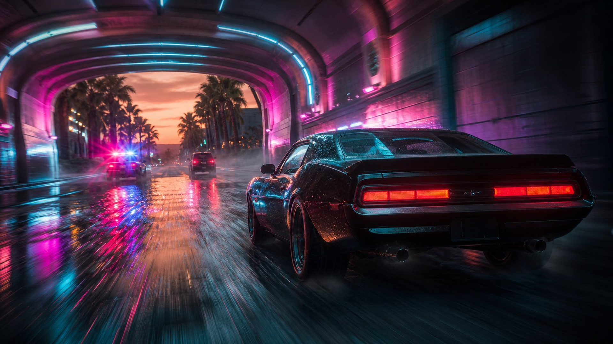
Getaway · Tunnel
Filé de vitesse, pluie et lumières de poursuite.
ILLUSTRATION IA
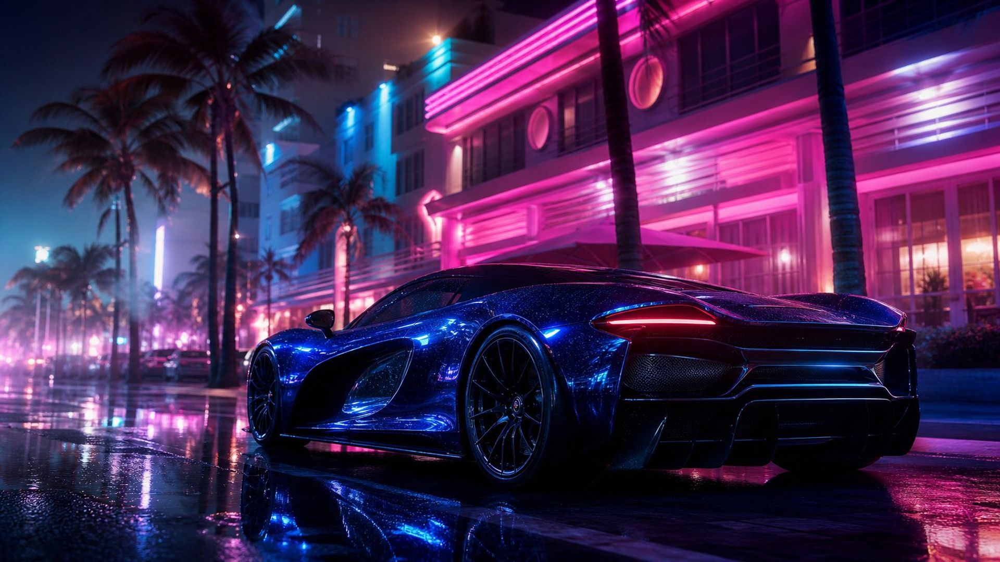
Supercar · Night
Carrosserie sculptée, reflets néon et façade pastel.
ILLUSTRATION IA
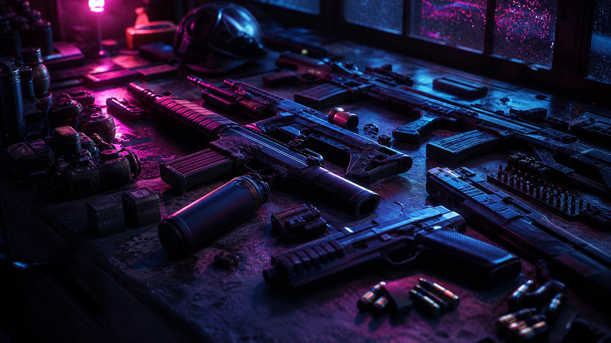
Arsenal · Neon
Nature morte métallique, sans marque ni arme officielle.
Machine à états
Feuille de route
Fondations validées
Workflow, recherche, design system, 10 JPG S2 et 10 MP3 S2. Contrôles CP1/CP2 passés.
COMPLETCore pages
Homepage définitive, composants globaux, SEO, 10 JPG S3, 2 MP3 S3, recherche locale et arbitrages.
COMPLETGuide complet
33 pages de contenu, carte interactive, quiz, guides de lancement et 546 illustrations originales. Contrôles CP4 à CP31 passés.
COMPLET